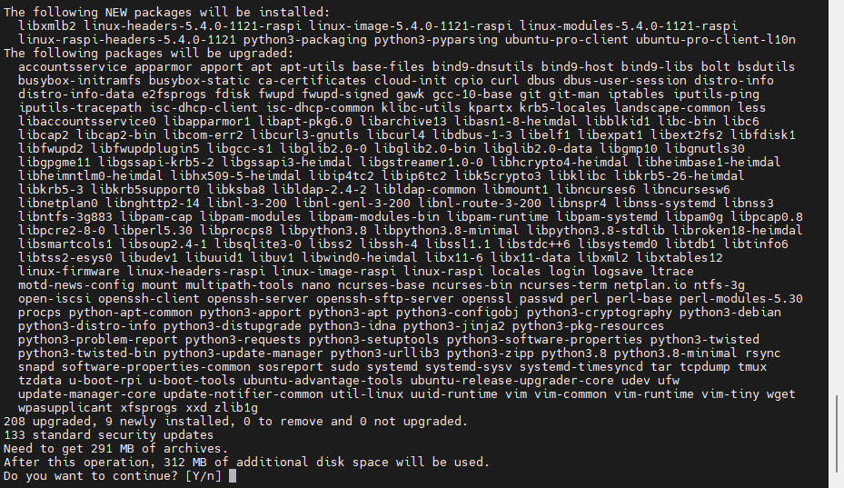
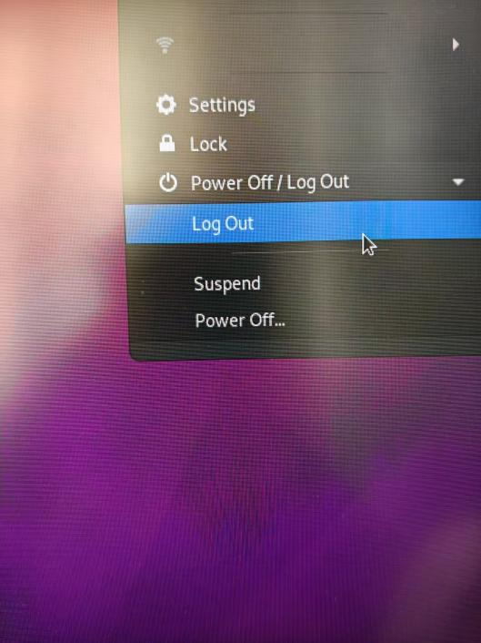

Ubuntu20.04安装ROS1
tips
所有指令的输入不需要全部敲，只用输入前几个字母再按Tab就会自动补齐或列出可选项
1.Ubuntu20.04桌面安装
1.1 换源
使用MobaXterm远程连接上树莓派以后
输入指令
会弹出以下内容
{kind=link}
按i进入输入模式
将原来的源 （前面 没有加 # 的） 前面加上“#”注释掉
在最下面粘贴上国内的源
我使用的是中科大源，清华源我在使用的时候后面会一直显示无法解包，具体原因不清楚
中科大源：
deb https://mirrors.ustc.edu.cn/ubuntu-ports/ focal main restricted universe multiverse
deb-src https://mirrors.ustc.edu.cn/ubuntu-ports/ focal main main restricted universe multiverse
deb https://mirrors.ustc.edu.cn/ubuntu-ports/ focal-updates main restricted universe multiverse
deb-src https://mirrors.ustc.edu.cn/ubuntu-ports/ focal-updates main restricted universe multiverse
deb https://mirrors.ustc.edu.cn/ubuntu-ports/ focal-backports main restricted universe multiverse
deb-src https://mirrors.ustc.edu.cn/ubuntu-ports/ focal-backports main restricted universe multiverse
deb https://mirrors.ustc.edu.cn/ubuntu-ports/ focal-security main restricted universe multiverse
deb-src https://mirrors.ustc.edu.cn/ubuntu-ports/ focal-security main restricted universe multiverse
# deb https://mirrors.ustc.edu.cn/ubuntu-ports/ focal-proposed main restricted universe multiverse
# deb-src https://mirrors.ustc.edu.cn/ubuntu-ports/ focal-proposed main restricted universe multiverse
清华源：
######## Ubuntu20.04LTS 清华镜像源 ###############
# 默认注释了源码镜像以提高 apt update 速度，如有需要可自行取消注释
deb https://mirrors.tuna.tsinghua.edu.cn/ubuntu/ focal main restricted universe multiverse
# deb-src https://mirrors.tuna.tsinghua.edu.cn/ubuntu/ focal main restricted universe multiverse
deb https://mirrors.tuna.tsinghua.edu.cn/ubuntu/ focal-updates main restricted universe multiverse
# deb-src https://mirrors.tuna.tsinghua.edu.cn/ubuntu/ focal-updates main restricted universe multiverse
deb https://mirrors.tuna.tsinghua.edu.cn/ubuntu/ focal-backports main restricted universe multiverse
# deb-src https://mirrors.tuna.tsinghua.edu.cn/ubuntu/ focal-backports main restricted universe multiverse
deb https://mirrors.tuna.tsinghua.edu.cn/ubuntu/ focal-security main restricted universe multiverse
# deb-src https://mirrors.tuna.tsinghua.edu.cn/ubuntu/ focal-security main restricted universe multiverse
# 预发布软件源，不建议启用
# deb https://mirrors.tuna.tsinghua.edu.cn/ubuntu/ focal-proposed main restricted universe multiverse
# deb-src https://mirrors.tuna.tsinghua.edu.cn/ubuntu/ focal-proposed main restricted universe multiverse
粘贴好后会是如图形式:
{kind=link}
粘贴上后按Esc
先输入一个冒号 : (英文输入)
再输入
按Enter退出编辑
输入
这个的速度和自己网速有关
{kind=link}
完成后
输入
或输入，可跳过下面一步 （以防意外建议一步一步来查看安装是否有问题）
{kind=link}

如果是sudo apt upgrade，此时需要输入y/Y
{kind=link}
然后就等待更新，更新快慢和自己网速有关
注意
如果出现断网或别的情况就先ctrl+c 再
sudo reboot
重启一下 然后再
sudo apt update
然后再
sudo apt upgrade
重新更新
{kind=link}
进行到这一步说明换源已完成
1.2 安装Ubuntu桌面版
输入
或输入
可跳过下面一步 （以防意外建议一步一步来查看安装是否有问题）
{kind=link}
如果是sudo apt install ubuntu-desktop，此时需要输入y/Y
{kind=link}
进行到这一步说明安装Ubuntu桌面版已完成
1.3 安装xrdp
输入
或输入
可跳过下面一步 （以防意外建议一步一步来查看安装是否有问题）
{kind=link}
如果是sudo apt install xrdp，此时需要输入y/Y
完成后输入
输入
重启一次
重启后输入
并在里面添加以下内容（按i进入编辑模式）
{kind=link}
添加后按Esc
先输入一个冒号 : (英文输入)
再输入
按Enter退出编辑
退出后输入
重启一次
1.4 个人热点/Wifi情况
打开电脑的远程桌面连接 (如果是使用网线连接的跳过这里看第5小节)
{kind=link}
登录需要输入ip地址
{kind=link}
然后就是用户名ubuntu和自己设定的密码
进入界面
{kind=link}
↓
{kind=link}
↓
如果提醒你更新到22的版本就先不要更新，就用20.04版本的
{kind=link}
↓
{kind=link}
↓
{kind=link}
↓
{kind=link}
↓
然后就可以点屏幕右上角

{kind=link}
↓
{kind=link}
后面安装ROS的操作还是用MobaXterm操作，远程桌面连接我这里用着感觉延迟挺高，看自己情况吧
1.5 网线连接的情况
给树莓派接上屏幕、键盘、鼠标进入ubuntu桌面
{kind=link}
这个位置就会显示wifi的连接（系统一开始默认是英文的，开头会有几个弹窗直接跳过就行）
按以下步骤进行操作:
{kind=link}
{kind=link}
{kind=link}
注意
ip地址不一定要为第三步那样的，但是整体规律要一致，
DNS和Gateway的ip与Address的区别，Netmask的地址为 255.255.255.0
这样树莓派的ip地址就被设置为静态ip（固定）了，如果要用电脑远程连接，只要保持在同一wifi下直接连接就可以
1.6 系统汉化方法
参考: 系统汉化方法
2. ROS安装
2.1 设置安装源
使用国内清华源或中科大源，我前面Ubuntu使用的就是中科大源这里也就使用中科大源了
中科大源设置（直接复制）:
终端输入并回车以下内容
sudo sh -c '. /etc/lsb-release && echo "deb http://mirrors.ustc.edu.cn/ros/ubuntu/ `lsb_release -cs` main" > /etc/apt/sources.list.d/ros-latest.list'
清华源设置（直接复制）:
终端输入并回车以下内容
sudo sh -c '. /etc/lsb-release && echo "deb http://mirrors.tuna.tsinghua.edu.cn/ros/ubuntu/ `lsb_release -cs` main" > /etc/apt/sources.list.d/ros-latest.list'
2.2 设置Key
终端输入并回车以下内容（直接复制）:
sudo apt-key adv --keyserver 'hkp://keyserver.ubuntu.com:80' --recv-key C1CF6E31E6BADE8868B172B4F42ED6FBAB17C654
{kind=link}
2.3 安装
终端输入并回车以下内容（直接复制）:
(更新命令)
{kind=link}
然后终端输入并回车以下内容（直接复制）:
(安装命令)
注意
由于网络原因，导致连接超时，可能会安装失败，可以多次重复调用 更新命令 和 安装命令，直至成功
2.4 设置环境变量
设置环境变量是为了方便每次打开新终端可以直接使用，不需要再换为root模式
终端输入并回车以下内容（直接复制）:
然后再刷新一下环境变量，命令如下
终端输入并回车以下内容（直接复制）:
2.5 安装构建依赖工具
终端输入并回车以下内容（直接复制）:
sudo apt install python3-rosdep python3-rosinstall python3-rosinstall-generator python3-wstool build-essential
2.6 初始化rosdep
第一步：
终端输入并回车以下内容（直接复制）:
第二步：
终端输入并回车以下内容（直接复制）:
注意
由于网络原因可能出现读取超时的报错，只需要重新执行第二步，直到完全初始化完成
{kind=link}
2.6.1 rosdep意外解决参考
可能会出现一些问题，参考如下：
{kind=link}
2.7 测试ROS1
以上步骤都完成后即可测试ROS1
终端输入（直接复制）
后打开一个新的终端
输入（直接复制）
{kind=link}
回车后屏幕会出现一个新窗口是一个小海龟
再打开一个新终端输入（直接复制）
{kind=link}
回车后将鼠标停留在当前终端，使用键盘的上下左右键（不是WASD）可以控制小海龟运动
完成
如果小海龟按照你的控制正常运动说明ROS1已完成安装且功能正常